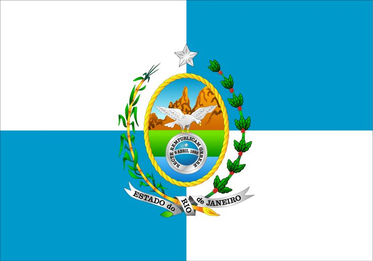
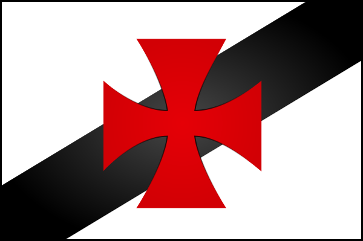
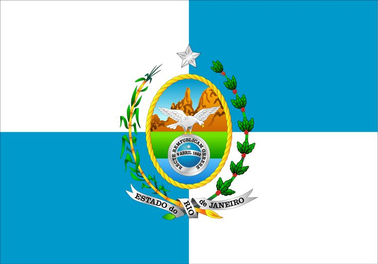
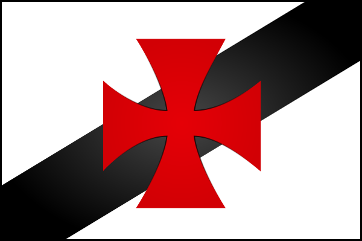

Profissional experiente em atendimento ao cliente e gestão de operações, com uma sólida carreira em setores de
hospitalidade, serviços de imigração e cruzeiros internacionais. Destaca-se pela capacidade de liderar equipes,
administrar operações complexas e fornecer um atendimento excepcional. Experiência inclui gestão de
restaurantes, consultoria de vistos e serviços de bar de alta qualidade, demonstrando versatilidade e
competência em diversas áreas.
Caloura na área de tecnológia, cursando engenharia de software e ainda descobrindo o caminho e identificação
no setor. Busco sempre novos desafios, mantendo o foco no futuro e em aprimorar as minhas qualificações.
Brasileira  carioca 
vascaína 
carioca 
vascaína 
Dentre os meus hobbies estão:
HQ, mangás e animes;
 Video-games;
Video-games;
Séries e Filmes;
Tecnologia e Graphic
design.